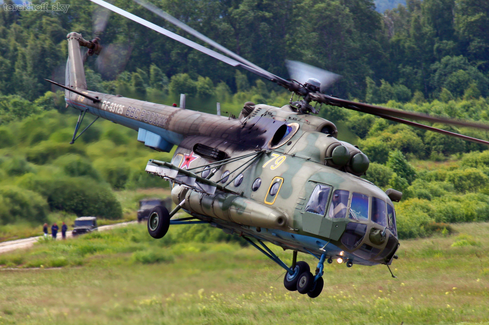

МИ-8
Ми-8 (по кодификации NATO: Hip — «Бедро») — советский многоцелевой вертолёт, разработанный Опытным конструкторским бюро (ОКБ) М. Л. Миля, в начале 1960-х годов.
Ми-8, и его модификации, самый массовый двухдвигательный вертолёт в мире (в общей сложности построено более 17 тыс. экземпляров всех модификаций); является самым массовым вертолётом в истории авиации[7]. Широко используется более чем в 50 государствах мира для выполнения множества гражданских и военных задач. Вертолёты Ми-8, как правило, имеют двойное назначение, о чём указывается в сертификате типа; в России вертолёты, имеющие военное назначение, могут быть проданы только госкомпанией «Рособоронэкспорт», входящей в корпорацию «Ростех». Все остальные вертолёты, находящиеся в свободной продаже, имеют только гражданское назначение[8].
ТТХ:
| В-8 | Ми-8П | Ми-8Т | Ми-8МТ (Ми-17) |
Ми-18 | Ми-8МТВ-1 (Ми-17-1В) |
Ми-8АМТ (Ми-171) |
Ми-172 | МСБ-8 | Ми-171А2 | |
|---|---|---|---|---|---|---|---|---|---|---|
| Год постройки | 1961 | 1965 | 1965 | 1975 | 1980 | 1987 | 1991 | 1991 | проект | 2014 |
| Экипаж | 3 человека | 3 человека | 3 человека | 3 человека | 3 человека | 3 человека | 3 человека | 2 человека | 2 человека | 2 человека |
| Число пассажиров (десантников) | 18 человек | 28 человек | 24 человека | 24 человека | 30 человек | 24 человека | 27 человек | 26 человек | 24 человека | 20 человек |
| Длина (с вращ. винтами) | 25,31 м | 25,31 м | 25,31 м | 25,31 м | 25,31 м | 25,31 м | 25,31 м | 25,31 м | 25,31 м | |
| Высота (с вращ. рулевым винтом) | 5,54 м | 5,54 м | 5,54 м | 5,54 м | 5,54 м | 5,54 м | 5,54 м | 5,54 м | 5,54 м | |
| Диаметр несущего винта | 21 м | 21,3 м | 21,3 м | 21,3 м | 21,3 м | 21,3 м | 21,3 м | 21,3 м | 21,3 м | 21,3 м |
| Масса пустого | 5726 кг | 7000 кг | 6934 кг | 7200 кг | 7550 кг | 7381 кг | 6913 кг | 7514 кг | ||
| Нормальная взлётная масса | — | 11 570 кг | 11 100 кг | 11 100 кг | 11 500 кг | 11 100 кг | 11 100 кг | 11 878 кг | 11 100 кг | 11 100 кг |
| Максимальная взлётная масса | — | 12 000 кг | 12 000 кг | 13 000 кг | 13 000 кг | 13 000 кг | 13 000 кг | н/д | 12 500 кг | 13 000 кг
13 500 кг при работе с внешней подвеской |
| Двигатели | 1 × >АИ-24В | 2 × ТВ2-117 | 2 × ТВ2-117 | 2 × ТВ3-117МТ | 2 × ТВ3-117МТ | 2 × ТВ3-117ВМ | 2 × ТВ3-117ВМ | 2 × ТВ3-117ВМ | 2 × ТВ3-117ВМА-СБМ1В 4Е | 2 × ГТД Климов ВК-2500ПС-03 |
| Мощность двигателей (на взлётном режиме) | 1 × 1900 л. с. | 2 × 1500 л. с. | 2 × 1500 л. с. | 2 × 1900 л. с. | 2 × 1900 л. с. | 2 × 2000 л. с. | 2 × 2000 л. с. | 2 × 2000 л. с. | 2 × 2500 л. с. | 2 × 2500 л. с. |
| Максимальная скорость | — | 250 км/ч | 260 км/ч | 250 км/ч | 270 км/ч | 250 км/ч | 250 км/ч | 250 км/ч | 260 км/ч | 280 км/ч |
| Крейсерская скорость | — | 225 км/ч | 225 км/ч | 220 км/ч | 240 км/ч | 230 км/ч | 230 км/ч | 230 км/ч | 225 км/ч | 260 км/ч |
| Динамический потолок | — | 4200 м | 4500 м | 5000 м | 5550 м | 6000 м | 6000 м | 6000 м | 9150 м | 6000 м |
| Практическая дальность | н/д | 425 км | 480 км | 520 км | 580 км | 590 км | 590 км | 715 км | 885 км | 800 км |